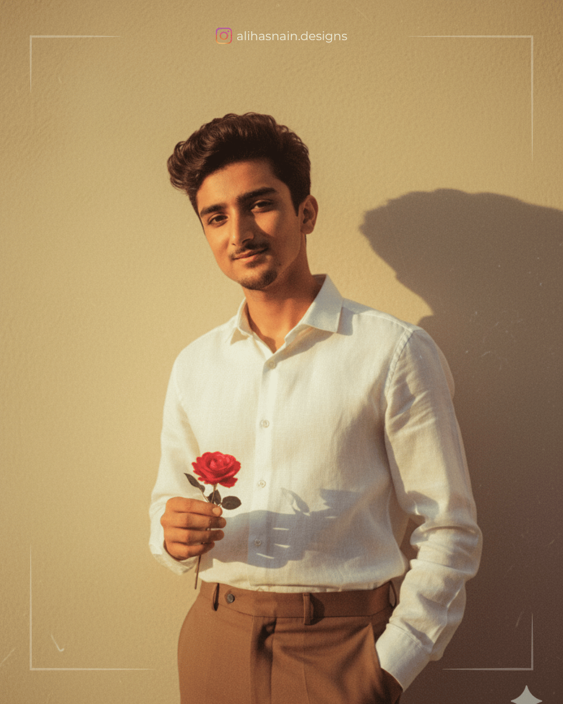

A stylish 20-years-old young man standing casually beside a pastel orange flower cart filled with white and peach flowers, wearing a light-orange loose shirt with sleeves rolled up, off white pants, and white sneakers. He is holding a brown hat in one hand trying to hold head, smiling a romantic smile slightly while looking camera. He sighting with one eye. The background has soft pastel walls with blue windows, green plants, and sparkling raindrops falling gently, creating a dreamy romantic atmosphere. do not change or edit my face
Prompt 62
Ultra-realistic cinematic full-body portrait of a stylish (20-years-old) young man (5'11", slim but toned body) with the exact same face as reference. He wears a light orange shirt paired with off-white trousers and white sneakers.
Pose: sitting casually on a low wooden bench, right elbow resting on knee, left hand holding a light pink marigold loosely. The expression is calm, slightly smiling Background: a bright sunny garden with light-pink and white blooms.
Prompt 63
Eye-level cinematic (3:4) full-body portrait, 20-years-old young man from the uploaded picture exactly same face leaning on flowering vines beside stained glass cottage window. Casual: smiling at rose, tousling hair, legs crossed. Lush flower garden, creamy bokeh, golden hour. Light yellow shirt, white tee, baggy khaki cargos, Puma sneakers,, luxury watch. Sharp detail, warm grading, natural light. sunglasses brand. do not change or edit my face.
Prompt 64
Ultra-realistic editorial 8k high quality photo of a 22 year old young man (face from reference photo, unchanged), He wears a off-white sweatshirt with light-blue flower prints on the sleeves, beige wide pants, and deep white chunky sneakers with light-blue accents and sunglasses, head tilted slightly with a gentle smile. Background mix flower tree and sitting on a yellow box and some baby rabbit playing around him. Slightly warm tone. Exact same face based on the reference image.
Prompt 65
Hyper-realistic overhead 9:16 close-up of myself with glasses, playfully leaning against an ivy-covered stone wall of an old countryside cottage during golden hour. I'm gently smiling with my head slightly tilted back, one hand brushing away a dangling vine, wearing a skyblue and white lined shirt with white linen pants. The flowering vines are in full bloom with orange, magenta, and lavender hues, softly blurred in the foreground.
Prompt 66
Candid photography shot from a 3/4 side top angle as it was taken from a balcony on the second floor, featuring a (22-years-old) young man with the same face as the reference photo. He is casually walking past a turquoise wooden door surrounded by pink bougainvillea flowers covering the wall.
Outfit: white linen shirt with rolled-up sleeves, off-white chino pants and clean white sneakers. A small leather sling bag is slung across his body. Keep the face of the subject exactly similar from the reference images provided, and create a 3:4 image. Don't change or edit my face.
Prompt 67
Cinematic, hyper-realistic full body shot of me (use my face with accurate 100%) on a vintage park bench under warm streetlight at golden hour, focused on smartphone. Light purple oversized shirt, beige trousers, sneakers, tousled hair, glasses, leather watch; flower bouquet beside. Lush blooms, cherry tree, dramatic golden clouds, creamy bokeh foreground, cable overhead. 8K, RAW, shallow depth, warm highlights/teal shadows, vivid textures. 100% face match.
Prompt 68
Hyper-realistic 8K vertical close-up of a 20 year old man sitting comfortably on a log in a dense wildflower field under a tree at foggy evening. He leans slightly forward, hands on knees, wearing a modern black and white check shirt over a white tee, rugged watch. Warm bonfire glow illuminates him, with a van parked behind. Sharp focus, creamy bokeh, cinematic color grading with soft fog diffusion for a dreamy mood.
Note: use facial description from the uploaded picture.

Prompt 69
Using the reference picture of (20-years-old) me with 511" height create a vintage, grainy, yet bright image with a 90s movie aesthetic Dress the boy in a crisp, plain white linen shirt and tailored brown pants, evoking a minimalist, 90s-inspired casual elegance. His hair should be short, wavy, and stylish-think tousled, voluminous waves with a slightly messy quiff, dark brown in color. He holds a small, bloomed rose delicately in one hand, adding a romantic touch. The scene is set in a windy environment, with the shirt subtly billowing and hair gently tousled. He stands against a minimalist, slightly textured solid wall, with deep shadows and high contrast creating a mysterious, artistic atmosphere. The lighting is warm with a golden mysterious, artistic atmosphere. The lighting is warm, with golden tones evoking a golden hour glow, His expression is moody, calm, yet happy and introspective, capturing a cinematic, Introspective vibe...
Prompt 70
A cinematic portrait of a young man standing by the sea during twilight, facing sideways with his head slightly tilted back in soft, introspective pose, he has short, neatly styled black hair and wears round, thin-framed glasses. The man is depressed in a high collared, black overcoat that drapes cleanly over his figure. Behind his back, he holds a bouquet of long - steamed flowers in one hand featuring a mix of red, pink lavender, and white blooms with rich green leaves tha ocean streches behind him with gentle waves, And tha sky above is a muted, dusky gradient of soft purple and blues, evoking a calm, melancholic mood. The lightning is soft and diffused, adding a dreamy, serene tone to the entire composition.